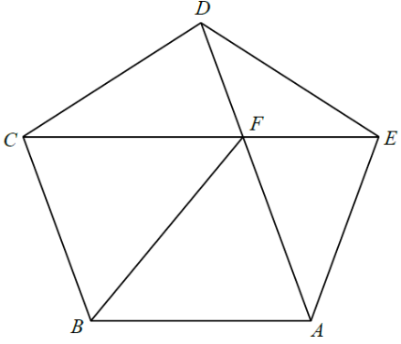

平面幾何 · 正多邊形

$$\text{內角}=\frac{3\times180^{\circ}}{5}=108^{\circ}$$
在等腰 $\triangle ADE$ 中（$AE=ED$）：
$$\angle EAD=\angle ADE=\frac{180^{\circ}-108^{\circ}}{2}=36^{\circ}$$
故 $\angle BAD=108^{\circ}-36^{\circ}=72^{\circ}$。
$AD$ 與 $CE$ 在這對稱下互相對調，所以交點 $F$ 被固定在對稱軸上，即 $BF$ 就是這條對稱軸。
因此 $\angle ABF=\dfrac{108^{\circ}}{2}=54^{\circ}$。
$AB=CB$（正五邊形邊長）、$AF=CF$（對稱）、$BF$ 公共，故
$$\triangle ABF\cong\triangle CBF\quad(\text{S.S.S.})$$
I 正確。
$$\angle AFB=180^{\circ}-72^{\circ}-54^{\circ}=54^{\circ}$$
而 $\angle EAF=\angle EAD=36^{\circ}$，故
$$54^{\circ}+36^{\circ}=90^{\circ}$$
II 正確。
$A$ 與 $C$ 關於 $BF$ 對稱，所以 $AC\perp BF$，III 正確。
三句都正確。